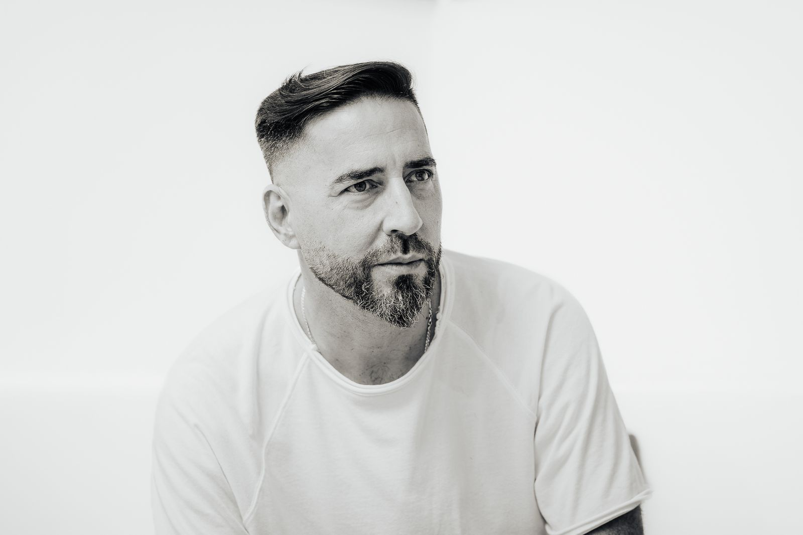
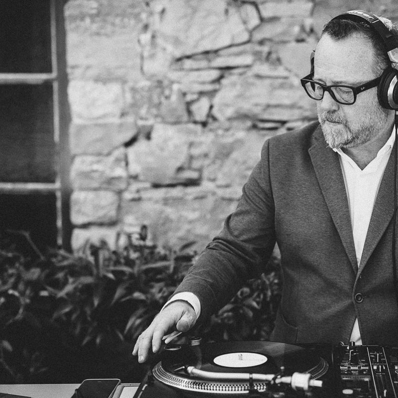
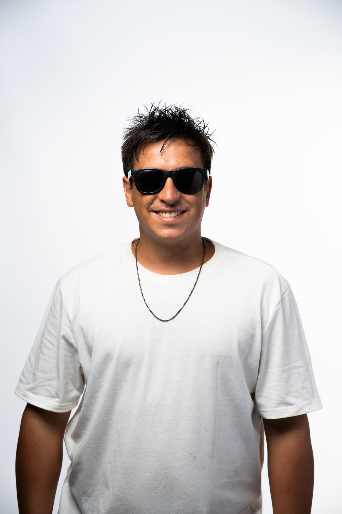

LOS MEJORES DJ'S INTERNACIONALES DE IBIZA EN SANTA MARIA DEL RIO
Tres leyendas del circuito internacional
Tres nombres que resuenan en los festivales más grandes de Europa. Tres cabezas de cartel que han dominado las pistas de baile de todo el mundo, Ibiza, Londres, Barcelona, Miami, Berlín y Argentina. Esta noche, Santamar se convierte en su escenario.

IBIZA · INTERNACIONAL · TECH-HOUSE
Paul Darey, de Buenos Aires (argentina) pero afincado en España desde 1988, es un dj habitual en los mejores clubs y beach clubs de la isla blanca. Nominado varias veces durante su carrera a los Premios Dj Españoles y a los premios de la revista vicious como mejor dj residente de Ibiza y dj del año. Hi define su estilo musical como house y tech-house. Sus sets están cargados de melodías, voces y grooves poderosos que generan un estado de positividad y energía. También se aventura en el lejano oriente y disfruta de giras anuales por el resto del mundo, realizando sesiones y apariciones por invitación como Ade, WMC, BPM y más. En. estas últimas dos décadas se presentó en los mejores clubes del mundo como Zouk Singapore, Tresor BErlin, Green Valleey Brazil, The Egg London, Sankeys, Fire London, Cafe d’anvers Belgium, Zef Buenos Aires, Club room chile, Cielo New York, sólo por nombrar algunos. En Ibiza fue durante siete años dj residente en la discoteca más premiada del mundo, Space Ibiza, y también tocó en los grandes clubs como Pacha, Privilege, Amnesia, Heart y en el único Café Mambo Ibiza donde mantiene su residencia en el presente año 2022 y el lugar donde debutó en Ibiza hace 20 años.

Melodic Tech · Atmosphere
El arquitecto del sonido de SANTAMAR. Dj en discotecas como Ministry of Sound, 22 años de experciencia, un dj y selector musical originario de Oviedo. Es conocido por su enfoque sofisticado y su habilidad para crear ambientes, con un estilo muy elegante y ecléctico, fusionando estilos musicales que van desde el soul y el funk hasta el house y la música electrónica,m pasando siempre por su estilo favorito como es el disco clásico. Habitual de los eventos privados y fiestas más selectas a lo largo de todo el país tiene un enfoque muy personal y cuidada estética sonora. Obeso de la calidad del sonido, genera magia en nuestro pueblo.

Deep House · Progressive
El alma de la escena deep europea. DUTARI viene directo desde Ibiza, pinchando en los mejores Yates del mundo Ibicenco. Si has estado en el puerto de Ibiza, habrás escuchado su música. Viene desde las playas de Ibiza para traer un sonido más sofisticado. Sus sets Undergound y Covers pero poderosos han sido el cierre perfecto de festivales muy tops en Ibiza. Una experiencia que celebra la música como arte.
EL MOMENTO ES AHORA
Santa María del Río · León
Solo los que estén en la lista vivirán la noche que nadie podrá olvidar.
Los tres DJs más potentes de Ibiza llegan a un pueblo que respirará música hasta el amanecer.
Una experiencia única, sin venta de entradas, solo para quienes busquen algo verdaderamente exclusivo.